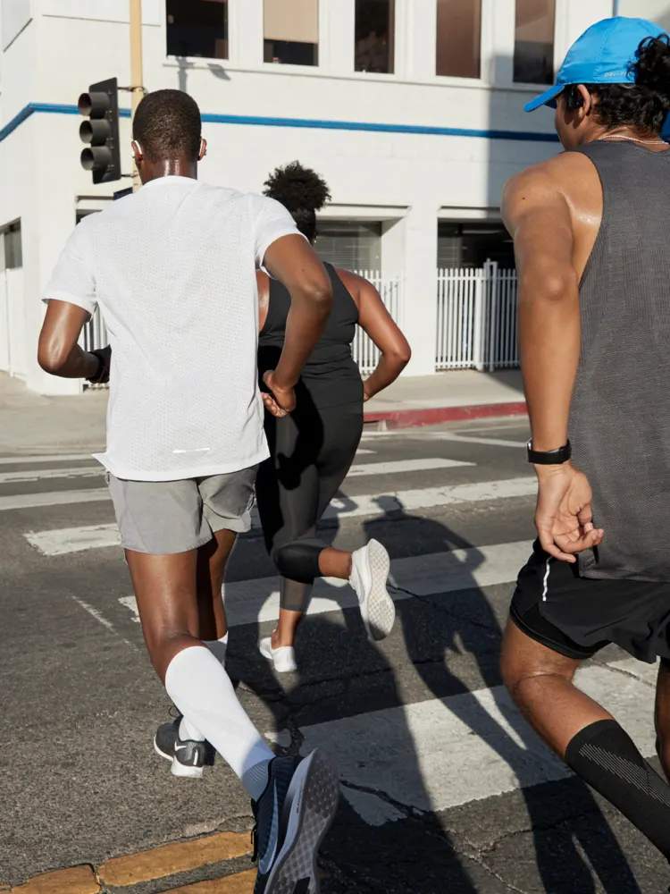

Бег - одно из самых природных занятий для человека, как в целой истории, так и для каждого человека.
Он уникален своей биомеханикой, поскольку включается в работу большое количество мышц, связок и суставов.
Это отличное средство, чтобы поддерживать крепкое здоровье. Если придерживаться рекомендаций и
дисциплинированного подхода - можно получить комплект позитивных воздействий для организма, которые
подтверждены научными и медицинскими исследованиями.
|
 |
8 причин начать бегать:
Однако, есть противопоказания для занятий бегом: